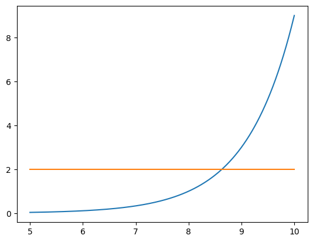

import numpy as np
import matplotlib.pyplot as plt09wk-1: [Python] – numpy 중요문법, 시각화
1. numpy 중요문법
A. 선언
# 예제1 – 리스트를 직접입력 \(\to\) 형태변환
x = np.array([1,2,3])
xarray([1, 2, 3])# 예제2 – 수열 1,2,3,…,100 만들기
np.array(range(1,101))array([ 1, 2, 3, 4, 5, 6, 7, 8, 9, 10, 11, 12, 13,
14, 15, 16, 17, 18, 19, 20, 21, 22, 23, 24, 25, 26,
27, 28, 29, 30, 31, 32, 33, 34, 35, 36, 37, 38, 39,
40, 41, 42, 43, 44, 45, 46, 47, 48, 49, 50, 51, 52,
53, 54, 55, 56, 57, 58, 59, 60, 61, 62, 63, 64, 65,
66, 67, 68, 69, 70, 71, 72, 73, 74, 75, 76, 77, 78,
79, 80, 81, 82, 83, 84, 85, 86, 87, 88, 89, 90, 91,
92, 93, 94, 95, 96, 97, 98, 99, 100])np.arange(1,101)array([ 1, 2, 3, 4, 5, 6, 7, 8, 9, 10, 11, 12, 13,
14, 15, 16, 17, 18, 19, 20, 21, 22, 23, 24, 25, 26,
27, 28, 29, 30, 31, 32, 33, 34, 35, 36, 37, 38, 39,
40, 41, 42, 43, 44, 45, 46, 47, 48, 49, 50, 51, 52,
53, 54, 55, 56, 57, 58, 59, 60, 61, 62, 63, 64, 65,
66, 67, 68, 69, 70, 71, 72, 73, 74, 75, 76, 77, 78,
79, 80, 81, 82, 83, 84, 85, 86, 87, 88, 89, 90, 91,
92, 93, 94, 95, 96, 97, 98, 99, 100])# 예제3 – 수열 1,1,1,…,1 만들기 혹은 0,0,0,…,0 만들기
np.ones(5)array([1., 1., 1., 1., 1.])np.zeros(5)array([0., 0., 0., 0., 0.])# 예제4 – 수열 0.1, 0.2, …., 1.0 만들기
np.arange(0,11)/10array([0. , 0.1, 0.2, 0.3, 0.4, 0.5, 0.6, 0.7, 0.8, 0.9, 1. ])np.arange(0, 1.1, 0.1)array([0. , 0.1, 0.2, 0.3, 0.4, 0.5, 0.6, 0.7, 0.8, 0.9, 1. ])np.linspace(0,1,11)array([0. , 0.1, 0.2, 0.3, 0.4, 0.5, 0.6, 0.7, 0.8, 0.9, 1. ])# 예제5 – 표준정규분포에서 난수생성
np.random.randn(10)array([ 1.91132543e-03, -5.36514206e-01, 1.63549794e+00, -2.30657511e-01,
-1.56986805e+00, 1.71745446e+00, 8.36808210e-01, 5.89426074e-01,
7.17895916e-01, -2.35373955e+00])np.random.normal(size=10)array([-0.14645453, -0.33496087, 1.22378303, -0.49569381, 0.43766676,
0.75080821, -1.00926308, -0.5053372 , -0.67169337, 2.25568269])# 예제6 – 0~1사이의 난수생성
np.random.rand(10)array([0.70344977, 0.81807601, 0.08284526, 0.85391079, 0.39270324,
0.40323306, 0.04128491, 0.33782304, 0.66615908, 0.23199266])# 예제7 – 0,1,2,3,4 사이의 정수
np.random.randint(low=0,high=5,size=10)array([1, 4, 3, 2, 3, 2, 4, 4, 0, 4])B. 연산
# 예제1 – 평균
x = np.array([-1,0,1,2])
xarray([-1, 0, 1, 2])아래를 계산하라.
\[\bar{x} = \frac{1}{n}\sum_{i=1}^{n}x_i\]
(풀이)
sum(x)/len(x)np.float64(0.5)np.sum(x)/len(x)np.float64(0.5)x.sum()/len(x)np.float64(0.5)np.mean(x)np.float64(1.0)x.mean()np.float64(0.5)#
# 예제2 – 분산
x = np.random.randn(10000)
xarray([-0.33723073, 0.26253142, -1.33003582, ..., 0.03023264,
-1.00126222, -1.90853605], shape=(10000,))아래를 계산하라.
\[\frac{1}{n-1}\sum_{i=1}^{n}(x_i-\bar{x})^2\]
(풀이)
np.sum((x- np.mean(x))**2) / (len(x)-1)np.float64(1.011778303558633)#
# 예제3
x = np.random.randn(10)
y = np.random.randn(10)아래를 계산하라.
\[\sum_{i=1}^{n} x_i y_i\]
(풀이)
np.sum(x*y)np.float64(-1.2398587340573648)#
C. max, argmax, min, argmin
# 예제1 – 최소값과 최대값
x = np.arange(1,101)/10
xarray([ 0.1, 0.2, 0.3, 0.4, 0.5, 0.6, 0.7, 0.8, 0.9, 1. , 1.1,
1.2, 1.3, 1.4, 1.5, 1.6, 1.7, 1.8, 1.9, 2. , 2.1, 2.2,
2.3, 2.4, 2.5, 2.6, 2.7, 2.8, 2.9, 3. , 3.1, 3.2, 3.3,
3.4, 3.5, 3.6, 3.7, 3.8, 3.9, 4. , 4.1, 4.2, 4.3, 4.4,
4.5, 4.6, 4.7, 4.8, 4.9, 5. , 5.1, 5.2, 5.3, 5.4, 5.5,
5.6, 5.7, 5.8, 5.9, 6. , 6.1, 6.2, 6.3, 6.4, 6.5, 6.6,
6.7, 6.8, 6.9, 7. , 7.1, 7.2, 7.3, 7.4, 7.5, 7.6, 7.7,
7.8, 7.9, 8. , 8.1, 8.2, 8.3, 8.4, 8.5, 8.6, 8.7, 8.8,
8.9, 9. , 9.1, 9.2, 9.3, 9.4, 9.5, 9.6, 9.7, 9.8, 9.9,
10. ])x.min(), x.max()(np.float64(0.1), np.float64(10.0))#
# 예제2 – 최소값이 위치한 인덱스, 최대값이 위치한 인덱스
x = np.array([1,2,-3,5,0])
xarray([ 1, 2, -3, 5, 0])x.argmax()np.int64(3)x.argmin()np.int64(2)#
# 예제3 – 평균과 가장 가까운값
x = np.random.randn(10000)
xarray([-0.36316981, -0.56130547, 0.75729488, ..., 0.41905188,
-0.11849521, 0.06319488], shape=(10000,))abs(x - x.mean()).argmin()np.int64(164)x[164],x.mean()(np.float64(0.008453069560524464), np.float64(0.00844547364243125))#
# 예제5 ~ 연산
x = np.array([True,False]*5)
xarray([ True, False, True, False, True, False, True, False, True,
False])~xarray([False, True, False, True, False, True, False, True, False,
True])D. 인덱싱
# 예제1 – 일반적인 인덱싱
x = np.random.rand(5)
xarray([0.63218175, 0.07014674, 0.44579247, 0.67861248, 0.99851469])x[0]np.float64(0.6321817545096893)x[:2]array([0.63218175, 0.07014674])x[-2:]array([0.67861248, 0.99851469])#
# 예제2 – 스트라이딩
x = np.arange(1,101)
xarray([ 1, 2, 3, 4, 5, 6, 7, 8, 9, 10, 11, 12, 13,
14, 15, 16, 17, 18, 19, 20, 21, 22, 23, 24, 25, 26,
27, 28, 29, 30, 31, 32, 33, 34, 35, 36, 37, 38, 39,
40, 41, 42, 43, 44, 45, 46, 47, 48, 49, 50, 51, 52,
53, 54, 55, 56, 57, 58, 59, 60, 61, 62, 63, 64, 65,
66, 67, 68, 69, 70, 71, 72, 73, 74, 75, 76, 77, 78,
79, 80, 81, 82, 83, 84, 85, 86, 87, 88, 89, 90, 91,
92, 93, 94, 95, 96, 97, 98, 99, 100])x[::2]array([ 1, 3, 5, 7, 9, 11, 13, 15, 17, 19, 21, 23, 25, 27, 29, 31, 33,
35, 37, 39, 41, 43, 45, 47, 49, 51, 53, 55, 57, 59, 61, 63, 65, 67,
69, 71, 73, 75, 77, 79, 81, 83, 85, 87, 89, 91, 93, 95, 97, 99])x[1::2]array([ 2, 4, 6, 8, 10, 12, 14, 16, 18, 20, 22, 24, 26,
28, 30, 32, 34, 36, 38, 40, 42, 44, 46, 48, 50, 52,
54, 56, 58, 60, 62, 64, 66, 68, 70, 72, 74, 76, 78,
80, 82, 84, 86, 88, 90, 92, 94, 96, 98, 100])x[2::3]array([ 3, 6, 9, 12, 15, 18, 21, 24, 27, 30, 33, 36, 39, 42, 45, 48, 51,
54, 57, 60, 63, 66, 69, 72, 75, 78, 81, 84, 87, 90, 93, 96, 99])#
# 예제3 – True/False 를 이용한 인덱싱
x = np.random.randn(10)
xarray([-0.73009974, 0.05116788, -0.14926489, 0.67426466, -1.53236237,
1.30732613, 0.78714154, -1.90635159, -0.12107762, 1.58117164])x>0array([False, True, False, True, False, True, True, False, False,
True])x[x>0]array([0.05116788, 0.67426466, 1.30732613, 0.78714154, 1.58117164])주의: 아래는 동작하지 않음
(x>0)*1array([0, 1, 0, 1, 0, 1, 1, 0, 0, 1])x[(x>0)*1]array([-0.73009974, 0.05116788, -0.73009974, 0.05116788, -0.73009974,
0.05116788, 0.05116788, -0.73009974, -0.73009974, 0.05116788])#
2. 시각화
A. 기본시각화
# 예제1 – scatter plot
x = [1,2,3,4]
y = [1,3,2,-1]plt.plot(x,y,'o')
#
# 예제2 – dot-conneted plot
x = [1,2,3,4]
y = [1,3,2,-1]plt.plot(x,y,'--o')
#
# 예제3 – line plot
x = [1,2,3,4]
y = [1,3,2,-1]plt.plot(x,y)
plt.plot(x,y,'--')
#
# 예제4 – \(-2<x<2\) 에서 \(y=x^2\) 그리기
x = np.linspace(-2,2,101)
y = x**2plt.plot(x,y)
#
B. 겹쳐서 그리기
# 예제1 – \(-5<x<5\) 에서 \(\cos(x), \sin(x)\) 겹쳐서 그리기
x = np.linspace(-5,5,101)plt.plot(x,np.cos(x))
plt.plot(x,np.sin(x))
#
# 예제1 – \(-5<x<5\) 에서 \(\cos(x), \sin(x)\) 겹쳐서 그리기
x = np.linspace(-5,5,101)plt.plot(x,np.cos(x))
plt.plot(x,np.sin(x))
#
# 예제2 – \(1<x<3\) 에서 \(3^{x-8} = \big(\frac{1}{27}\big)^x\) 겹쳐서 그리기
x = np.linspace(1,3,101)plt.plot(x,3**(x-8))
plt.plot(x,(1/27)**x)
#
# 예제3 – \(5<x<10\) 에서 \(3^{x-8} =2\) 겹쳐서 그리기
x = np.linspace(5,10,1001)plt.plot(x,3**(x-8))
plt.plot(x,0*x+2)
#
3. old lecture notes
- R입문 (2021)
- Python 입문/프로그래밍 (2022,2023,2024)